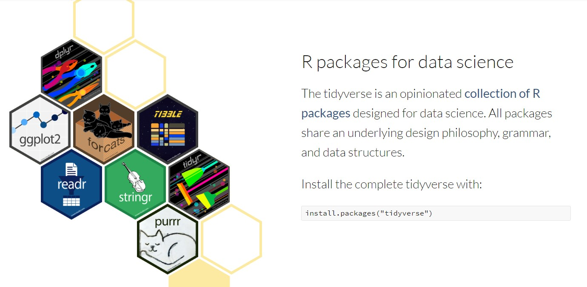
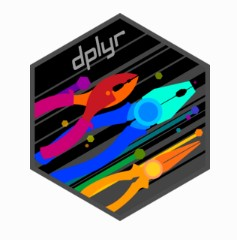
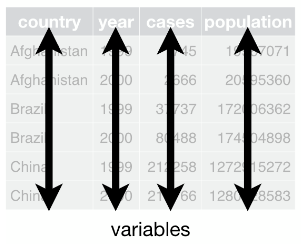
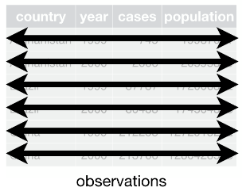
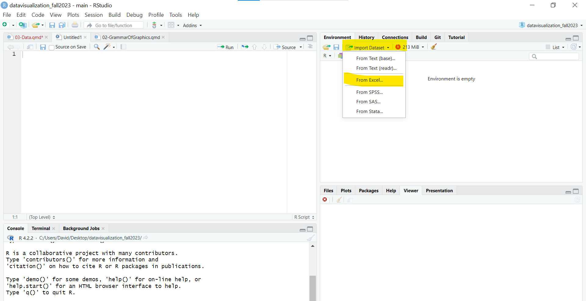
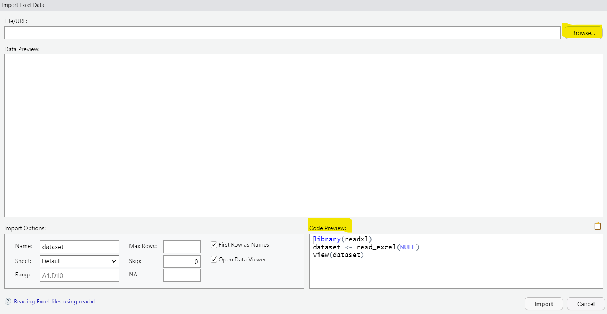

f(x)Tidyverse I: Import, tidy, and transform
Week 3
Plan for today

Data wrangling …
… includes all steps to prepare our data for visualization, modeling, and analysis:
importing data
subsetting (selecting) our data
renaming variables or recode values
creating new variables
… will account for most of the time spent on your data project!
tidyverse

dplyr

The dplyr package provides us with the verbs to wrangle our data:
select()
filter()
mutate()
group_by()
summarize()
… and many more!
Tidyverse: Concepts
There is much more to the tidyverse, but two important concepts that you should be familiar with, if you want to use it, are:
Tidy data
Pipes
Tidy data
Tidy refers to the structure of the data.
Each variable has its own column.

Each observation has its own row.

Each value has its own cell.

Pipes
Usually, in R we apply functions as follows:
In the logic of pipes this function is written as:
x %>% f(.)Here, object x is piped into function f, becoming (by default) its first argument. We can use pipes with more than one function, too:
x %>%
f_1() %>%
f_2() %>%
f_3()Pipes
The %>% pipe used in the tidyverse is part of the magrittr package which also includes other specialized types of pipes.
RStudio offers a keyboard shortcut for inserting the %>% pipe: Ctrl + Shift + M (Windows & Linux)/Cmd + Shift + M (Mac)
Since version 4.1.0, base R also offers its own pipe |>, which is similar to but not the same as the %>% pipe
Importing data
Importing data manually


Importing files
We can import various formats. For example:
R:
load("file.RData")/readRDS("file.RDS").CSV:
library("readr")/read_csv("file.csv").Stata:
library("haven")/read_dta("file.dta").
Tip
We can import files locally or access them online.
Consult the R documentation (e.g. type
?read_csv) to get an overview about options (e.g.skip).
Let’s import some data!
- GLES Panel Wave 27 [You need to create a fee account]
- 2025 German federal election results
Import GLES wave 25
# we load the haven package to import Stata files
library(haven)
# we store the data in the object "gles_25"
gles_25 <- read_dta("ZA7731_sA_v1-0-0.dta")
# let's check the class of our object
dim(gles_25)[1] 10030 201# and it's dimensions
class(gles_25)[1] "tbl_df" "tbl" "data.frame"Inspect GLES wave 25
# let's have a look at a subset of the data
gles_25[1:10,1:7]# A tibble: 10 × 7
study version doi field_start field_end sample lfdn
<dbl+lbl> <chr> <chr> <chr> <chr> <dbl+l> <dbl>
1 7731 [ZA7731 GLES Panel 20… 1-0-0 … 10.4… 2023-10-11 2023-10-… 4 [Sam… 18540
2 7731 [ZA7731 GLES Panel 20… 1-0-0 … 10.4… 2023-10-11 2023-10-… 3 [Sam… 12587
3 7731 [ZA7731 GLES Panel 20… 1-0-0 … 10.4… 2023-10-11 2023-10-… 6 [Sam… 26011
4 7731 [ZA7731 GLES Panel 20… 1-0-0 … 10.4… 2023-10-11 2023-10-… 6 [Sam… 26012
5 7731 [ZA7731 GLES Panel 20… 1-0-0 … 10.4… 2023-10-11 2023-10-… 6 [Sam… 26014
6 7731 [ZA7731 GLES Panel 20… 1-0-0 … 10.4… 2023-10-11 2023-10-… 6 [Sam… 26018
7 7731 [ZA7731 GLES Panel 20… 1-0-0 … 10.4… 2023-10-11 2023-10-… 6 [Sam… 26019
8 7731 [ZA7731 GLES Panel 20… 1-0-0 … 10.4… 2023-10-11 2023-10-… 4 [Sam… 18556
9 7731 [ZA7731 GLES Panel 20… 1-0-0 … 10.4… 2023-10-11 2023-10-… 4 [Sam… 18557
10 7731 [ZA7731 GLES Panel 20… 1-0-0 … 10.4… 2023-10-11 2023-10-… 6 [Sam… 26021Inspect GLES wave 25
# let's have a look at a subset of the data
# alternatively, you can use: names(gles_25)[1:50]
colnames(gles_25)[1:50] [1] "study" "version" "doi" "field_start" "field_end"
[6] "sample" "lfdn" "kp25_2601" "kp25_010" "kp25_011a"
[11] "kp25_011b" "kp25_011c" "kp25_170" "kp25_190aa" "kp25_190ab"
[16] "kp25_190ba" "kp25_190bb" "kp25_850a" "kp25_850b" "kp25_870a"
[21] "kp25_870b" "kp25_2880d" "kp25_2880g" "kp25_2880o" "kp25_2880x"
[26] "kp25_2880cv" "kp25_1090" "kp25_1290" "kp25_1130" "kp25_1210"
[31] "kp25_020" "kp25_2880p" "kp25_2880t" "kp25_2880u" "kp25_2880y"
[36] "kp25_2880al" "kp25_650f2" "kp25_650o1" "kp25_650l1" "kp25_650s"
[41] "kp25_650e2" "kp25_650g2" "kp25_650h2" "kp25_650k1" "kp25_2880bg"
[46] "kp25_2880bh" "kp25_2880bp" "kp25_2880bq" "kp25_2880bs" "kp25_5020" Renaming
As you have seen, not all variable names are informative or they are quite long. This complicates the coding process for us and reviewers. We want:
short,
and informative variable names
# we rename only column 22
colnames(gles_25)[22] <- "ego_state_measures_inequality"
# let's check if it worked
colnames(gles_25)[22:23][1] "ego_state_measures_inequality" "kp25_2880g" # we can also rename multiple columns at once:
colnames(gles_25)[22:23] <- c("ego_state_measures_inequality",
"ego_state_no_economy")
# let's check if it worked
colnames(gles_25)[22:23][1] "ego_state_measures_inequality" "ego_state_no_economy" gles_25_new <- gles_25 %>%
# rename: new = old
rename(ego_state_measures_inequality = kp25_2880d)
colnames(gles_25)[22:23][1] "kp25_2880d" "kp25_2880g"gles_25_new <- gles_25 %>%
# rename: new = old
# rename multiple variables at once
rename(ego_state_measures_inequality = kp25_2880d,
ego_state_no_economy = kp25_2880g)
colnames(gles_25_new)[22:23][1] "ego_state_measures_inequality" "ego_state_no_economy" Selecting
Usually, we do not want to work with the full data set. For example, we do not need all of the 201 variables of the GLES wave 25. Therefore, we subset our data.
This also requires that we have engaged with the data set and the codebook (if available).
In base R, there are multiple ways to subset the data.
gles_new <- gles_25[,1:10]# we can subset the data using the select() verb
# Only the variable "study"
gles_select <- gles_25 %>%
select(study)
# Only the variables "study" and "kp25_011a"
gles_select <- gles_25 %>%
select(study, kp25_011a)
# All variables from "study" until "kp25_011a"
gles_select <- gles_25 %>%
select(study:kp25_011a)Select and Rename in one step
gles <- gles_25 %>%
# select(new_nam = old_name)
select(pol_interest_country = kp25_011a,
pol_interest_state = kp25_011b)Filtering
Filtering refers to rows instead of columns. We want to only include (or exclude) a specific set of observations.
Therefore, we need to use comparison or logical operators (e.g, ==, &, …).
gles_filter <- gles[gles$pol_interest_state == 5,]
dim(gles_filter)[1] 616 2# we can use the filter() verb
gles_filter <- gles %>%
filter(pol_interest_state == 5)
dim(gles_filter)[1] 616 2Adding logical operators
# now, we want to filter depending on political interest on the state and country level
gles_filter <- gles %>%
filter(pol_interest_state == 5 & pol_interest_country == 5 )
dim(gles_filter)[1] 569 2Mutating - Class
Oftentimes, we want to transform the class of our variables. E.g., transform a character variable (“2024”) to a numeric one (“2024).
In base R, there is: as.numeric(), as.character(), as.factor(), and as.logical()
# Let's test this:
class(gles_25$version)[1] "character"# change them to character
gles_25$character_test <- as.character(gles_25$version)
class(gles_25$character_test)[1] "character"# We can do the same using mutate() in dpylr:
gles_25 <- gles_25 %>%
mutate(character_test = as.character(version))
# let's check it
class(gles_25$character_test)[1] "character"Recoding
Sometimes, we might want to recode specific values. For example, we do not want to display numeric values but their labels. We can solve this using the case_match() verb. But as always, we have multiple possibilities to do so. I prefer case_when() or if_else().
# get value labels
table(gles_25$kp25_050k, useNA = "always")
-99 -93 1 2 3 4 5 <NA>
37 246 329 618 3200 3778 1822 0 table(gles_25$kp25_050k, useNA = "always")
-99 -93 1 2 3 4 5 <NA>
37 246 329 618 3200 3778 1822 0 # Now we can recode (some of) the values
gles_25_recode <- gles_25 %>%
# reads: when kp25_050k is equal to 99, then assign NA,
# otherwise, assign the existing value in kp25_050k
mutate(new = case_when(kp25_050k == -99 ~ NA,
TRUE ~ kp25_050k),
new = if_else(kp25_050k == -99, NA, kp25_050k))
table(gles_25_recode$new, useNA = "always")
-93 1 2 3 4 5 <NA>
246 329 618 3200 3778 1822 37 Your turn!
You can find the exercise for this session on the course website or directly on ILIAS.